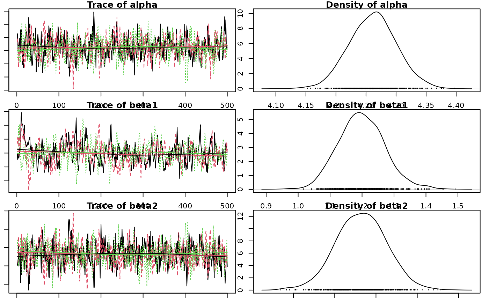
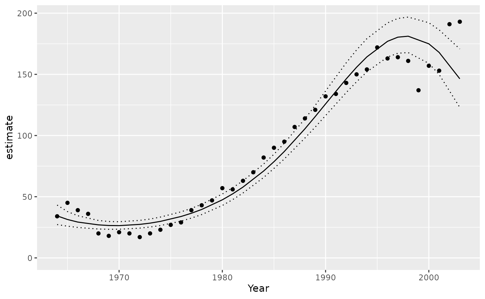

Introduction
jmbr (pronounced jimber) is an R package to facilitate
analyses using Just Another Gibbs Sampler (JAGS).
It is part of the mbr family of packages.
Model
The first part of the model is where priors, random effects and the relationships of interest are set in JAGS.
Example model:
model <- model("model {
# Priors
alpha ~ dnorm(0, 10^-2) T(0,)
beta1 ~ dnorm(0, 10^-2)
beta2 ~ dnorm(0, 10^-2)
beta3 ~ dnorm(0, 10^-2)
# Random Effect
log_sAnnual ~ dnorm(0, 10^-2)
log(sAnnual) <- log_sAnnual
for(i in 1:nAnnual) {
bAnnual[i] ~ dnorm(0, sAnnual^-2)
}
# Prediction of Interest
for (i in 1:length(Pairs)) {
log(ePairs[i]) <- alpha + beta1 * Year[i] + beta2 * Year[i]^2 + beta3 * Year[i]^3 + bAnnual[Annual[i]]
Pairs[i] ~ dpois(ePairs[i])
}
}")- Priors include the mean and SD value, which is converted to precision by doing .
- T(0,) Truncates the value at zero.
New Expression
The new expression is written in R Code and is used to calculate derived parameters.
new_expr = "
for (i in 1:length(Pairs)) {
log(prediction[i]) <- alpha + beta1 * Year[i] + beta2 * Year[i]^2 + beta3 * Year[i]^3 + bAnnual[Annual[i]]
fit[i] <- prediction[i]
residual[i] <- res_pois(Pairs[i], fit[i])
}"Modify Data
This section modifies a data frame to the form it will be passed to the analysis code. The modified data is passed in list form.
modify_data = function(data) {
data <- data |>
select(-Eyasses)
data
}Select Data & Random Effects
Select data is a named list specifying the columns to select and
their associated classes and values as well as transformations and
scaling options. Random effects gets the random effects definitions for
an object as a named list, where bAnnual refers to the
column name Annual in the data.
select_data = list("Pairs" = c(15L, 200L),
"Year*" = 1L,
Annual = factor()),
random_effects = list(bAnnual = "Annual"),All parameters in the data that are included in the model must be
listed here. - If there are values in the Pairs column outside of the
specified range, including NA’s, an error is thrown. -
"Year*" = 1L indicates Year is of class integer.
Full Model
model <- model("model {
alpha ~ dnorm(0, 10^-2)
beta1 ~ dnorm(0, 10^-2)
beta2 ~ dnorm(0, 10^-2)
beta3 ~ dnorm(0, 10^-2)
log_sAnnual ~ dnorm(0, 10^-2)
log(sAnnual) <- log_sAnnual
for(i in 1:nAnnual) {
bAnnual[i] ~ dnorm(0, sAnnual^-2)
}
for (i in 1:length(Pairs)) {
log(ePairs[i]) <- alpha + beta1 * Year[i] + beta2 * Year[i]^2 + beta3 * Year[i]^3 + bAnnual[Annual[i]]
Pairs[i] ~ dpois(ePairs[i])
}
}",
new_expr = "
for (i in 1:length(Pairs)) {
log(prediction[i]) <- alpha + beta1 * Year[i] + beta2 * Year[i]^2 + beta3 * Year[i]^3 + bAnnual[Annual[i]]
fit[i] <- prediction[i]
residual[i] <- res_pois(Pairs[i], fit[i])
}",
modify_data = function(data) {
data$nObs <- length(data$Annual)
data
},
select_data = list("Pairs" = c(15L, 200L),
"Year*" = 1L,
Annual = factor()),
random_effects = list(bAnnual = "Annual"),
nthin = 10L)
#> Warning: The `x` argument of `model()` character() as of embr 0.0.1.9036.
#> ℹ Please use the `code` argument instead.
#> ℹ Passing a string to model() is deprecated. Use model(code = ...) or
#> model(mb_code("..."), ...) instead.
#> This warning is displayed once every 8 hours.
#> Call `lifecycle::last_lifecycle_warnings()` to see where this warning was
#> generated.
data <- bauw::peregrine
data$Annual <- factor(data$Year)
set_analysis_mode("report")Analysis Mode
Analysis mode can be set depending on the desired output.
set_analysis_mode("report")Modes:
-
quick: To quickly test code runs.- Chains = 2L, iterations = 10L, thinning = 1L
-
report: To produce results for a report.- Chains = 3L, iterations = 500L
-
paper: To produce results for a peer-reviewed paper.- Chains = 4L, iterations = 1000L
Analyse
Analyse or reanalyse the model.
analysis <- analyse(model, data = data)
#> Registered S3 method overwritten by 'rjags':
#> method from
#> as.mcmc.list.mcarray mcmcr
#> # A tibble: 1 × 8
#> n K nchains niters nthin ess rhat converged
#> <int> <int> <int> <int> <int> <int> <dbl> <lgl>
#> 1 40 6 3 500 10 174 1.33 FALSE
#> Warning in value[[3L]](cond): beep() could not play the sound due to the following error:
#> Error in play.default(x, rate, ...): no audio drivers are available
analysis <- reanalyse(analysis)
#> # A tibble: 1 × 8
#> n K nchains niters nthin ess rhat converged
#> <int> <int> <int> <int> <int> <int> <dbl> <lgl>
#> 1 40 6 3 500 20 302 1.12 FALSE
#> Warning in value[[3L]](cond): beep() could not play the sound due to the following error:
#> Error in play.default(x, rate, ...): no audio drivers are availableAnalysis Table:
- n: Sample size.
- K: Number of parameter terms in the model.
- nchains: A count of the number of chains.
- niters: Number of iterations. A count of the number of simulations to save per chain.
-
ess: Effective sample size. The number of
independent samples with the same estimation power as the
nautocorrelated samples.- Measure of how much independent information there is in autocorrelated chains.
- Doubling the thinning rate doubles the
ess.
-
rhat: R-hat convergence diagnostic, compares the
between- and within-chain estimates for model parameters.
- Evaluates whether the chains agreed on the same values.
- Close to 1 is ideal.

Coefficient Table
Summary table of the posterior probability distribution.
coef(analysis)
#> Warning: The `simplify` argument of `coef()` must be TRUE as of mcmcr 0.4.1.
#> ℹ The deprecated feature was likely used in the base package.
#> Please report the issue to the authors.
#> This warning is displayed once every 8 hours.
#> Call `lifecycle::last_lifecycle_warnings()` to see where this warning was
#> generated.
#> # A tibble: 6 × 7
#> term estimate sd zscore lower upper pvalue
#> <term> <dbl> <dbl> <dbl> <dbl> <dbl> <dbl>
#> 1 alpha 4.26 0.0385 111. 4.18 4.33 0.000666
#> 2 beta1 1.19 0.0755 15.8 1.06 1.35 0.000666
#> 3 beta2 -0.0192 0.0299 -0.601 -0.0749 0.0439 0.539
#> 4 beta3 -0.270 0.0386 -7.06 -0.352 -0.200 0.000666
#> 5 log_sAnnual -2.25 1.09 -2.28 -7.03 -1.76 0.000666
#> 6 sAnnual 0.106 0.0383 2.70 0.000912 0.173 0.000666The estimate is the median by default.
The zscore is .
coef(analysis, simplify = TRUE)
#> # A tibble: 6 × 5
#> term estimate lower upper svalue
#> <term> <dbl> <dbl> <dbl> <dbl>
#> 1 alpha 4.26 4.18 4.33 10.6
#> 2 beta1 1.19 1.06 1.35 10.6
#> 3 beta2 -0.0192 -0.0749 0.0439 0.892
#> 4 beta3 -0.270 -0.352 -0.200 10.6
#> 5 log_sAnnual -2.25 -7.03 -1.76 10.6
#> 6 sAnnual 0.106 0.000912 0.173 10.6The s-value is the suprisal value, which is a measure of directionality with respect to zero.
The s-value is zero (unsurprising) when p-value = 1.0 and increases exponentially as p approaches zero.
Example: How surprising it would be to throw 10 heads in 10 coin tosses.
A larger s-value provides more evidence against the null hypothesis and support that the data is in the direction of the posterior.
Predictions
Example prediction:
Make predictions by varying Year with other predictors,
including the random effect of Annual held constant.
year <- predict(analysis, new_data = "Year")
#> Warning in value[[3L]](cond): beep() could not play the sound due to the following error:
#> Error in play.default(x, rate, ...): no audio drivers are available
library(ggplot2)
ggplot(data = year, aes(x = Year, y = estimate)) +
geom_point(data = bauw::peregrine, aes(y = Pairs)) +
geom_line() +
geom_line(aes(y = lower), linetype = "dotted") +
geom_line(aes(y = upper), linetype = "dotted") +
expand_limits(y = 0)
Predict
Predict() queries the model and tells you what the
expected number would be for that combination of values specified by new data.
The example below would calculate the annual number of pairs for a
typical number of fledged young of 50 (if Eyasses was a
parameter in the model).
year <- new_data(data, "Year", ref = list(Eyasses = 50L),
obs_only = TRUE) %>%
predict(analysis, new_data = ., ref_data = ref)Arguments
-
new_data: Creates a new data frame to calculate the predictions for. -
ref_data: A data frame with 1 row indicating the reference values for calculating the effects size.- This allows you to calculate the average change relative to
something else. In this case
ref = list(Eyasses = 50L).
- This allows you to calculate the average change relative to
something else. In this case
Predict can also take the form:
Where term calls the string of a term
in the new expression of the model. By
default it is the prediction[i].
New Data
Creates a new data frame to be passed to the predict function.
The idea is that most variables are held constant at a reference level while the variables of interest vary across their range.
year <- new_data(
data,
seq = "Year",
ref = list(Eyasses = 50L),
obs_only = TRUE) %>%
predict(analysis, new_data = ., ref_data = ref)Arguments
-
seq: The name of columns to vary over. In this example,Year.- If a factor is named in
seqthen all levels of the factor are represented.
- If a factor is named in
-
ref: A named list of reference values for variables not inseq.- In this case, it is holding the column
Eyassesconstant at 50L.
- In this case, it is holding the column
-
obs_only: A list of character vectors indicating the sets of variables to only keep combinations for, i.e. combinations that were observed in the data.- If
obs_only = TRUEthenobs_onlyis set to beseq.
- If
-
length_out: A count indicating the length of numeric/integer sequences.- If a factor is named in
seqthen all levels of the factor are represented (length_outis ignored). - The exception to this is if the factor is named in
obs_only, then only observed factor levels are represented in sequences.
- If a factor is named in